Classification Propagation
Classification propagation enables classifications associated to an entity to be automatically associated with other related entities of the entity. This is very useful in dealing with scenarios where a dataset derives it data from other datasets - like a table loaded with data in a file, a report generated from a table/view, etc. For example, when a table is classified as "PII", tables or views that derive data from this table (via CTAS or ‘create view’ operation) will be automatically classified as "PII".
Use Cases
Consider the following lineage where data from a 'hdfs_path' entity is loaded into a table, which is further made available through views. We will go through various scenarios to understand the classification propagation feature.
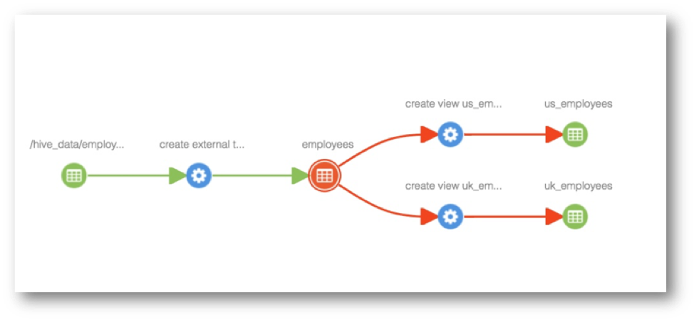
Add classification to an entity
When classification ‘PII’ is added to 'hdfs_path' entity, the classification is propagated to all impacted entities in the lineage path, including 'employees' table, views 'us_employees' and 'uk_employees' - as shown below.
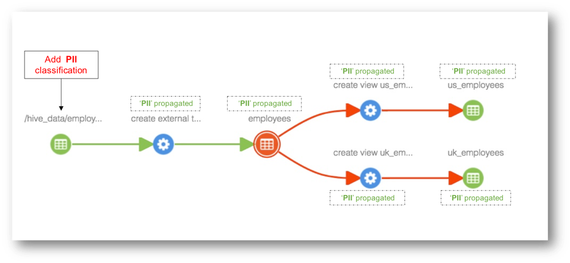
Update classification associated with an entity
Any updates to classifications associated with an entity will be seen in all entities the classification is propagated to as well.
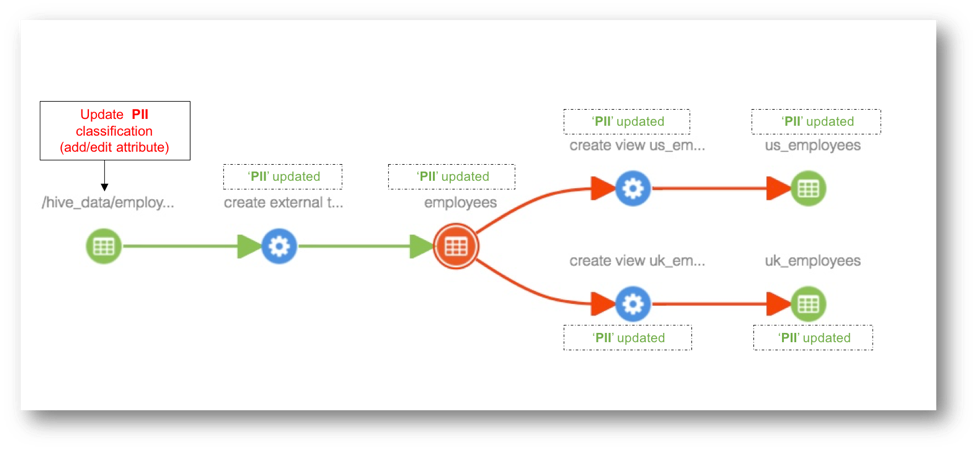
Remove classification associated with an entity
When a classification is deleted from an entity, the classification will be removed from all entities the classification is propagated to as well.
Add lineage between entities
When lineage is added between entities, for example to capture loading of data in a file to a table, the classifications associated with the source entity are propagated to all impacted entities as well.
For example, when a view is created from a table, classifications associated with the table are propagated to the newly created view as well.
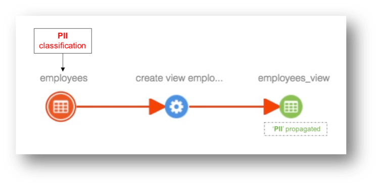
Delete an entity
Case 1: When an entity is deleted, classifications associated with this entity will be removed from all entities the classifications are propagated to.
For example. when employees table is deleted, classifications associated with this table are removed from 'employees_view' view.
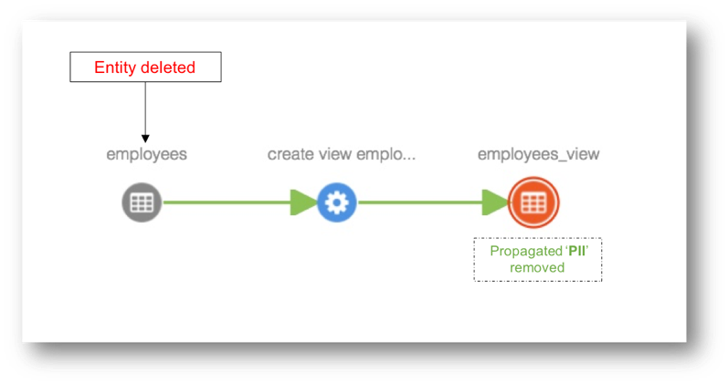
Case 2: When an entity is deleted in the middle of a lineage path, the propagation link is broken and previously propagated classifications will be removed from all derived entities of the deleted entity.
For example. when 'us_employees' table is deleted, classifications propagating through this table (PII) are removed from 'ca_employees' table, since the only path of propagation is broken by entity deletion.
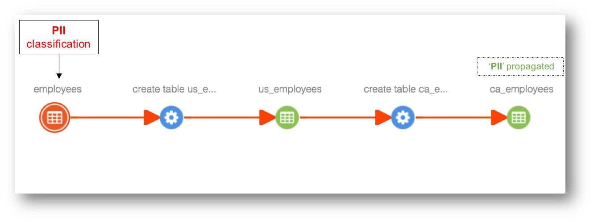
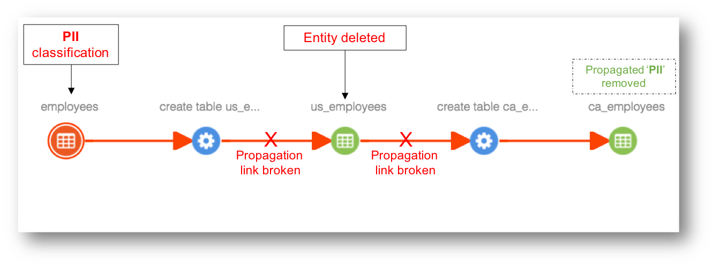
Case 3: When an entity is deleted in the middle of a lineage path and if there exists alternate path for propagation, previously propagated classifications will be retained.
For example. when 'us_employees' table is deleted, classifications propagating (PII) through this table are retained in 'ca_employees' table, since there are two propagation paths available and only one of them is broken by entity deletion.
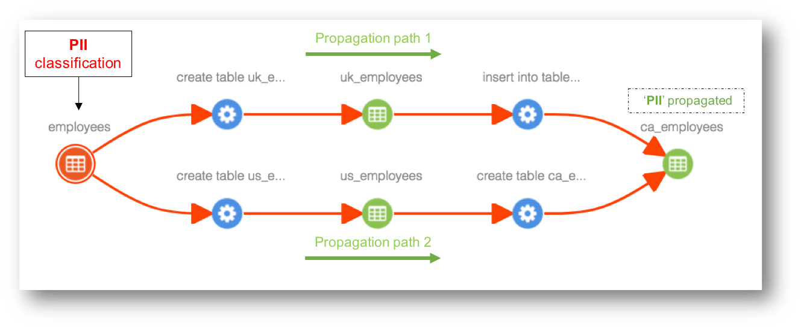
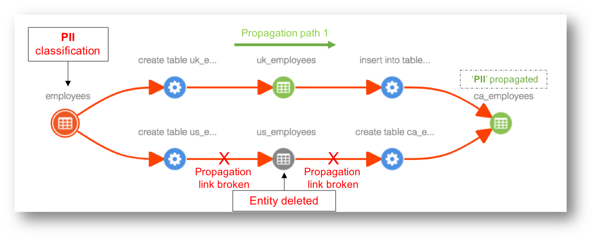
Control Propagation
Apache Atlas provides few options to control whether/where a classification is propagated. This section details available options.
Propagate flag in classification
Each association of classification to an entity has a boolean flag that controls whether the classification is propagated or not. When a classification is associated with an entity, this flag is set to ‘true’ i.e. the classification will be propagated to all impacted entities. This flag can be updated to desired value during initial association or later.
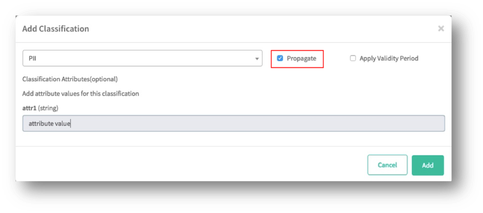
Propagate flag in lineage edge
Apache Atlas supports a flag at lineage edge to enable/disable propagation of classifications through the edge. By default, the propagation is enabled for lineage edges. When the flag is turned off, no classification will be propagated through this edge; and propagation of currently propagated classifications through the edge will be reevaluated, so that they can be removed from impacted entities. When the flag is turned on, propagation of classifications of the source entity will be reevaluated, so that they can be propagated to all impacted entities.
Block propagation of specific classifications in lineage edge
Apache Atlas supports blocking propagation of specific classifications in at lineage edges. This can be useful, for example, to handle scenarios like: a column classified as PII is masked when creating a view; in such scenario, if corresponding column in the created view might not have PII, hence the propagation of PII classification should be blocked. This can be done by updating the lineage edge to add the PII classification in ‘blocked propagated classifications’ list. Classifications in blocked propagated classifications will not be propagated in the derivative/downstream entities.
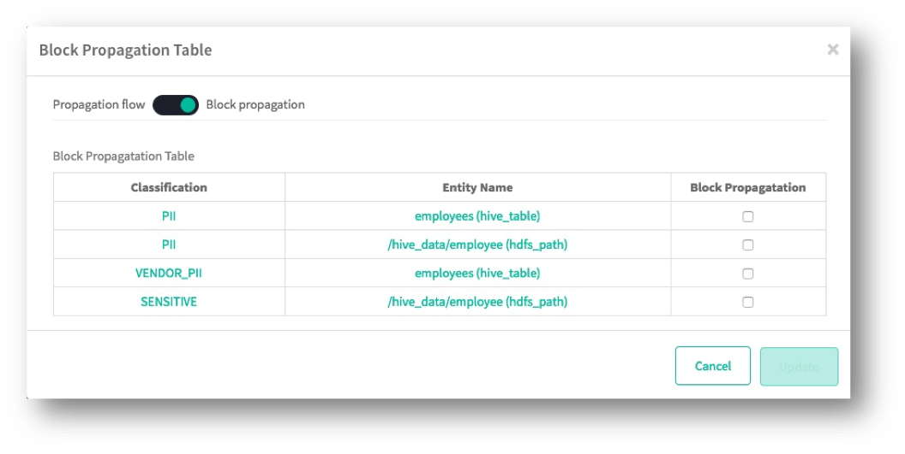